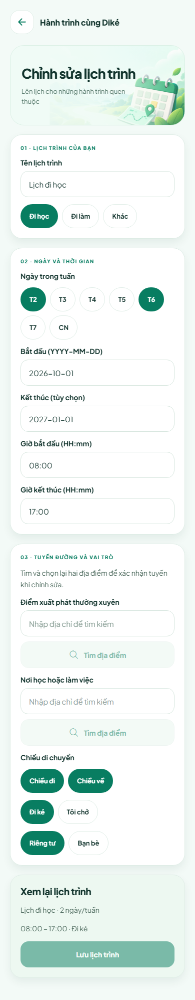
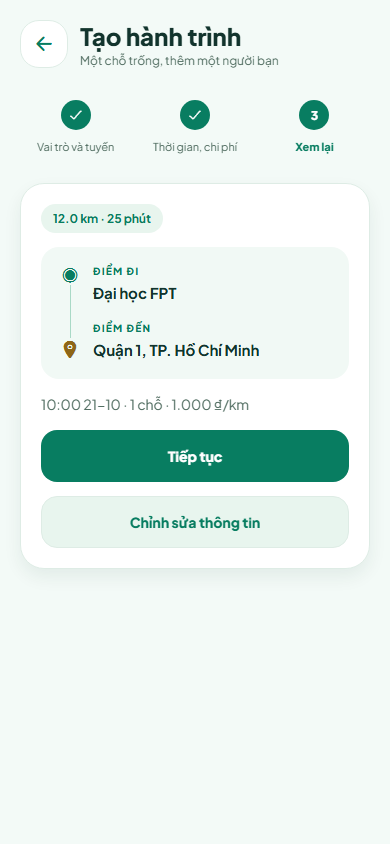
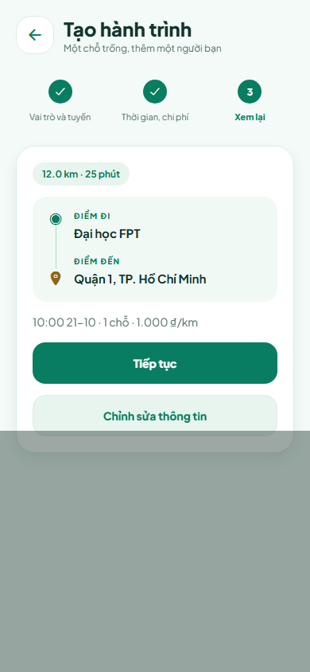
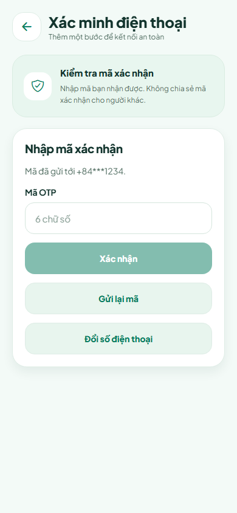

Dike Mobile — Ảnh dài toàn trang Mỗi trang/trạng thái là một ảnh dài từ đầu đến cuối, rộng 390 px. Ảnh giao diện mobile dựng trên Chromium với dữ liệu kiểm thử. Ảnh chụp A34 được giữ riêng trong thư mục android.
01-home · 390 × 1138 02-chuyen-di · 390 × 844 03-tin-nhan · 390 × 844 04-ho-so · 390 × 1193 05-thong-bao · 390 × 844 06-chi-tiet-bai-dang · 390 × 1107 07-chi-tiet-chuyen · 390 × 1102 08-chi-tiet-dat-cho · 390 × 968 09-tro-chuyen · 390 × 844 10-ho-so-nguoi-khac · 390 × 890 11-lich-trinh · 390 × 961 12-tao-lich · 390 × 1934 
13-sua-lich · 390 × 1994 14-cai-dat · 390 × 896 15-sua-ho-so · 390 × 844 16-quyen-rieng-tu · 390 × 844 17-bao-mat · 390 × 844 18-dieu-khoan · 390 × 844 19-cai-dat-thong-bao · 390 × 844 20-xac-minh · 390 × 1053 21-so-dien-thoai · 390 × 844 22-thu-vien-ui · 390 × 2448 23-tao-chuyen-buoc-1 · 390 × 914 24-tao-chuyen-buoc-2 · 390 × 997 
25-tao-chuyen-buoc-3 · 390 × 844 
26-xac-nhan-dang-chuyen · 390 × 844 
27-nhap-otp · 390 × 844 28-dang-nhap · 390 × 844